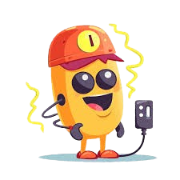

Uh-Oh, on dirait que votre page ne s'est pas encore bien alimentez..
Rafraichissez la page, et si le problème continu, cliquez ICI pour retourner à la page d'accueil !
Rafraichissez la page, et si le problème continu, cliquez ICI pour retourner à la page d'accueil !